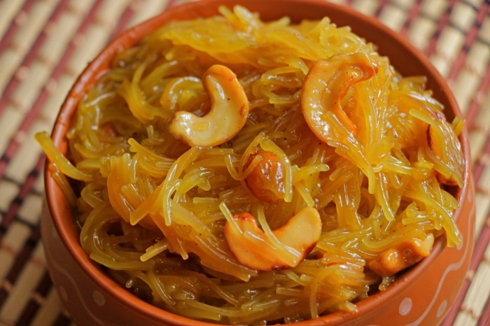

Vermicelli Kesari

Description
This is a sweet Indian Dish made with vermicelli
Ingredients
- 1 cup Vermicelli
- 2 cups of water
- 3/4 cup suger
- 1/4 cup Cashew Nuts
- 2 tbsp raisins
- 2 tbsp Ghee
- 1 tsp cardamon powder
- Saffron - A pinch
Steps
- Melt Ghee and roast Cashew Nuts and Raisins until they turn golden.
- Add Vermicelli to the remaining Ghee and roast till golden.
- Pour water into a pan, add saffron and let it boil on high flame.
- Add Vermicelli to the boiling water and cook on medium flame until some water remains.
- Add Sugar and Cardamom Powder and cook until it becomes thick. Add Cashew Nuts and Raisins and remove them from
the fire.
Back to Home